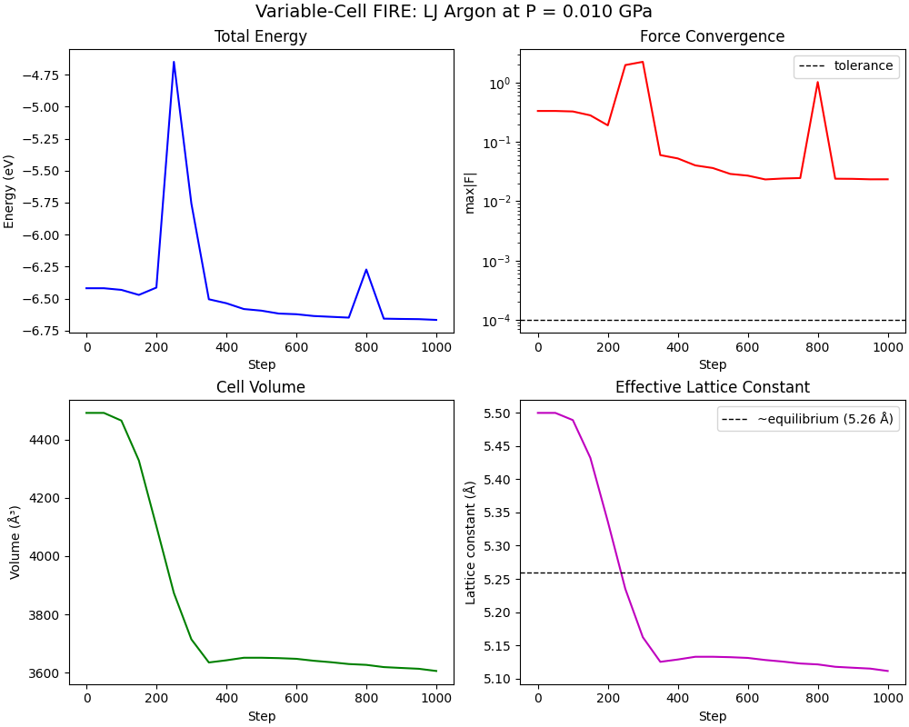

Note
Go to the end to download the full example code.
Variable-Cell FIRE Optimization with LJ Potential#
This example demonstrates joint optimization of atomic positions and cell parameters using the FIRE optimizer with the cell filter utilities on a realistic LJ argon crystal.
The workflow demonstrates: 1. align_cell() - Transform cell to upper-triangular form for stability 2. LJ energy/forces/virial - Compute realistic interatomic interactions 3. Virial → Stress → Cell Force - Convert atomic virial to cell driving force 4. pack_*_with_cell() - Combine atomic + cell DOFs into extended arrays 5. fire_step() - Standard FIRE optimization on extended arrays 6. unpack_positions_with_cell() - Extract optimized geometry
We optimize an FCC argon crystal under external pressure, demonstrating: - Atomic relaxation (force minimization) - Cell relaxation (pressure equilibration) - Simultaneous optimization of both
The external pressure creates a driving force on the cell to expand or contract until the internal stress matches the applied pressure.
from __future__ import annotations
import matplotlib.pyplot as plt
import numpy as np
import warp as wp
from _dynamics_utils import (
AMU_TO_EV_FS2_PER_A2 as AMU_TO_INTERNAL,
)
from _dynamics_utils import (
EPSILON_AR,
MASS_AR,
SIGMA_AR,
MDSystem,
create_fcc_lattice,
pressure_ev_per_a3_to_gpa,
pressure_gpa_to_ev_per_a3,
virial_to_stress,
)
from nvalchemiops.dynamics.optimizers import fire_step
from nvalchemiops.dynamics.utils import (
align_cell,
compute_cell_volume,
pack_forces_with_cell,
pack_masses_with_cell,
pack_positions_with_cell,
stress_to_cell_force,
unpack_positions_with_cell,
wrap_positions_to_cell,
)
# LJ cutoff for argon
CUTOFF = 2.5 * SIGMA_AR # ~8.5 Å
# ==============================================================================
# Main Example
# ==============================================================================
wp.init()
device = "cuda:0" if wp.is_cuda_available() else "cpu"
print(f"Using device: {device}")
Using device: cuda:0
Create Initial System#
Start with an FCC argon crystal at a non-equilibrium density. The optimization will find the equilibrium lattice constant that balances internal stress with external pressure.
n_cells = 3 # 3x3x3 = 108 atoms
a_initial = 5.5 # Å (slightly expanded from equilibrium ~5.26 Å)
positions_np, cell_np = create_fcc_lattice(n_cells, a_initial)
num_atoms = len(positions_np)
# Target external pressure (positive = compression)
# At ~0.01 GPa, argon should compress slightly from the initial density
target_pressure_gpa = 0.01
target_pressure = pressure_gpa_to_ev_per_a3(target_pressure_gpa)
print(f"System: {num_atoms} atoms in {n_cells}³ FCC lattice")
print(f"Initial lattice constant: {a_initial:.3f} Å")
print(f"Initial density: {num_atoms / np.linalg.det(cell_np):.4f} atoms/ų")
print(f"Target external pressure: {target_pressure_gpa:.3f} GPa")
print(f"LJ parameters: ε = {EPSILON_AR:.4f} eV, σ = {SIGMA_AR:.2f} Å")
System: 108 atoms in 3³ FCC lattice
Initial lattice constant: 5.500 Å
Initial density: 0.0240 atoms/ų
Target external pressure: 0.010 GPa
LJ parameters: ε = 0.0104 eV, σ = 3.40 Å
Initialize System#
# Create Warp arrays
positions = wp.array(positions_np, dtype=wp.vec3d, device=device)
cell = wp.array(cell_np.reshape(1, 3, 3), dtype=wp.mat33d, device=device)
# Create MD system for force computation (reuses _langevin_utils.MDSystem)
md_system = MDSystem(
positions=positions_np,
cell=cell_np,
epsilon=EPSILON_AR,
sigma=SIGMA_AR,
cutoff=CUTOFF,
skin=0.5,
switch_width=1.0, # Smooth cutoff for optimization
device=device,
)
Initialized MD system with 108 atoms
Cell: 16.50 x 16.50 x 16.50 Å
Cutoff: 8.50 Å (+ 0.50 Å skin)
LJ: ε = 0.0104 eV, σ = 3.40 Å
Device: cuda:0, dtype: <class 'numpy.float64'>
Units: x [Å], t [fs], E [eV], m [eV·fs²/Ų] (from amu), v [Å/fs]
Step 1: Align Cell#
--- Step 1: Align cell to upper-triangular form ---
Aligned cell:
[[16.5 0. 0. ]
[ 0. 16.5 0. ]
[ 0. 0. 16.5]]
Step 2: Pack Extended Arrays#
print("\n--- Step 2: Pack into extended arrays ---")
# Atomic masses (converted to internal units)
atom_masses_np = np.full(num_atoms, MASS_AR * AMU_TO_INTERNAL, dtype=np.float64)
atom_masses = wp.array(atom_masses_np, dtype=wp.float64, device=device)
# Cell DOF mass (controls how fast cell responds vs atoms)
# Larger mass = slower cell dynamics, more stable
cell_mass = 5000.0
cell_mass_arr = wp.array([cell_mass], dtype=wp.float64, device=device)
# Pack into extended arrays
N_ext = num_atoms + 2
ext_positions = wp.empty(N_ext, dtype=wp.vec3d, device=device)
pack_positions_with_cell(positions, cell, extended=ext_positions, device=device)
ext_velocities = wp.zeros(N_ext, dtype=wp.vec3d, device=device)
ext_masses = wp.empty(N_ext, dtype=wp.float64, device=device)
pack_masses_with_cell(atom_masses, cell_mass_arr, extended=ext_masses, device=device)
ext_forces = wp.empty(N_ext, dtype=wp.vec3d, device=device)
print(
f"Extended array size: {ext_positions.shape[0]} ({num_atoms} atoms + 2 cell DOFs)"
)
--- Step 2: Pack into extended arrays ---
Extended array size: 110 (108 atoms + 2 cell DOFs)
Step 3: FIRE Parameters#
# FIRE optimization parameters
dt0 = 0.001
dt_max = 1.0
dt_min = 0.001
alpha0 = 0.1
f_inc = 1.1
f_dec = 0.5
f_alpha = 0.99
n_min = 5
maxstep = 0.1 # Conservative for stability
# Device-side FIRE state arrays
dt = wp.array([dt0], dtype=wp.float64, device=device)
alpha = wp.array([alpha0], dtype=wp.float64, device=device)
alpha_start = wp.array([alpha0], dtype=wp.float64, device=device)
f_alpha_arr = wp.array([f_alpha], dtype=wp.float64, device=device)
dt_min_arr = wp.array([dt_min], dtype=wp.float64, device=device)
dt_max_arr = wp.array([dt_max], dtype=wp.float64, device=device)
maxstep_arr = wp.array([maxstep], dtype=wp.float64, device=device)
n_steps_positive = wp.zeros(1, dtype=wp.int32, device=device)
n_min_arr = wp.array([n_min], dtype=wp.int32, device=device)
f_dec_arr = wp.array([f_dec], dtype=wp.float64, device=device)
f_inc_arr = wp.array([f_inc], dtype=wp.float64, device=device)
# Accumulators
vf = wp.zeros(1, dtype=wp.float64, device=device)
vv = wp.zeros(1, dtype=wp.float64, device=device)
ff = wp.zeros(1, dtype=wp.float64, device=device)
uphill_flag = wp.zeros(1, dtype=wp.int32, device=device)
# Scratch arrays for unpack/stress/volume
pos_scratch = wp.empty(num_atoms, dtype=wp.vec3d, device=device)
cell_scratch = wp.empty(1, dtype=wp.mat33d, device=device)
cell_force_scratch = wp.empty(1, dtype=wp.mat33d, device=device)
volume_scratch = wp.empty(1, dtype=wp.float64, device=device)
Step 4: Optimization Loop#
max_steps = 1000
force_tol = 1e-4 # Convergence: max force/stress component
log_interval = 100 # Print every N steps
check_interval = 50 # Check convergence every N steps
# History for plotting
energy_hist = []
max_force_hist = []
volume_hist = []
pressure_hist = []
lattice_const_hist = []
print("\n--- Step 4: Variable-cell FIRE optimization ---")
print(f"Force tolerance: {force_tol:.1e}")
print("=" * 90)
print(
f"{'Step':>6} {'Energy':>12} {'max|F|':>10} {'Volume':>10} "
f"{'ΔP (GPa)':>10} {'a (Å)':>10}"
)
print("=" * 90)
converged = False
for step in range(max_steps):
# Unpack current state
pos_current, cell_current = unpack_positions_with_cell(
ext_positions,
positions=pos_scratch,
cell=cell_scratch,
num_atoms=num_atoms,
device=device,
)
# Update MD system with current geometry
wp.copy(md_system.wp_positions, pos_current)
md_system.update_cell(cell_current)
# Wrap positions into cell (important for PBC consistency)
wrap_positions_to_cell(
positions=md_system.wp_positions,
cells=md_system.wp_cell,
cells_inv=md_system.wp_cell_inv,
device=device,
)
# Compute LJ forces and virial
energies, forces, virial = md_system.compute_forces_virial()
# Convert virial to stress with external pressure contribution
stress = virial_to_stress(virial, md_system.wp_cell, target_pressure, device)
# Convert stress to cell force (for optimization)
compute_cell_volume(md_system.wp_cell, volumes=volume_scratch, device=device)
stress_to_cell_force(
stress,
md_system.wp_cell,
volume=volume_scratch,
cell_force=cell_force_scratch,
keep_aligned=True,
device=device,
)
# Pack forces into extended array
pack_forces_with_cell(
forces, cell_force_scratch, extended=ext_forces, device=device
)
# Re-pack positions (after wrapping)
pack_positions_with_cell(
md_system.wp_positions,
md_system.wp_cell,
extended=ext_positions,
device=device,
)
# Zero accumulators before FIRE step
vf.zero_()
vv.zero_()
ff.zero_()
# FIRE step on extended arrays
fire_step(
positions=ext_positions,
velocities=ext_velocities,
forces=ext_forces,
masses=ext_masses,
alpha=alpha,
dt=dt,
alpha_start=alpha_start,
f_alpha=f_alpha_arr,
dt_min=dt_min_arr,
dt_max=dt_max_arr,
maxstep=maxstep_arr,
n_steps_positive=n_steps_positive,
n_min=n_min_arr,
f_dec=f_dec_arr,
f_inc=f_inc_arr,
uphill_flag=uphill_flag,
vf=vf,
vv=vv,
ff=ff,
)
# Check convergence and log only at intervals (avoid sync every step)
if step % check_interval == 0 or step == max_steps - 1:
wp.synchronize()
ext_forces_np = ext_forces.numpy()
max_force = np.max(np.abs(ext_forces_np))
total_energy = float(energies.numpy().sum())
compute_cell_volume(md_system.wp_cell, volumes=volume_scratch, device=device)
volume = float(volume_scratch.numpy()[0])
# Compute deviation from target pressure (trace of stress / 3)
stress_np = stress.numpy()[0]
stress_trace = (stress_np[0, 0] + stress_np[1, 1] + stress_np[2, 2]) / 3
pressure_deviation_gpa = -pressure_ev_per_a3_to_gpa(stress_trace)
# Effective lattice constant (cube root of volume per atom * 4 for FCC)
lattice_const = (volume / num_atoms * 4) ** (1 / 3)
energy_hist.append(total_energy)
max_force_hist.append(max_force)
volume_hist.append(volume)
pressure_hist.append(pressure_deviation_gpa)
lattice_const_hist.append(lattice_const)
# Print at log intervals
if step % log_interval == 0 or step == max_steps - 1:
print(
f"{step:>6d} {total_energy:>12.6f} {max_force:>10.2e} {volume:>10.2f} "
f"{pressure_deviation_gpa:>10.4f} {lattice_const:>10.4f}"
)
if max_force < force_tol:
print(f"\nConverged at step {step} (max|F| = {max_force:.2e})")
converged = True
break
--- Step 4: Variable-cell FIRE optimization ---
Force tolerance: 1.0e-04
==========================================================================================
Step Energy max|F| Volume ΔP (GPa) a (Å)
==========================================================================================
0 -6.418945 3.32e-01 4492.12 -0.1756 5.5000
100 -6.431784 3.26e-01 4465.69 -0.1735 5.4892
200 -6.413812 1.90e-01 4102.96 -0.1030 5.3364
300 -5.756840 2.24e+00 3714.24 0.1366 5.1622
400 -6.536123 5.27e-02 3642.14 0.0133 5.1286
500 -6.594051 3.63e-02 3650.93 -0.0055 5.1327
600 -6.622020 2.70e-02 3647.21 -0.0127 5.1310
700 -6.642357 2.42e-02 3635.46 -0.0157 5.1254
800 -6.272493 1.02e+00 3626.44 0.0606 5.1212
900 -6.658879 2.39e-02 3615.81 -0.0155 5.1162
999 -6.666347 2.34e-02 3605.43 -0.0153 5.1113
Final Results#
wp.synchronize()
final_pos, final_cell = unpack_positions_with_cell(
ext_positions,
positions=pos_scratch,
cell=cell_scratch,
num_atoms=num_atoms,
device=device,
)
wp.synchronize()
final_cell_np = final_cell.numpy()[0]
final_volume = np.linalg.det(final_cell_np)
final_density = num_atoms / final_volume
final_a = (final_volume / num_atoms * 4) ** (1 / 3)
print("\n" + "=" * 60)
print("FINAL RESULTS")
print("=" * 60)
print(f"Final cell:\n{final_cell_np}")
print(f"\nFinal volume: {final_volume:.2f} ų")
print(f"Final density: {final_density:.6f} atoms/ų")
print(f"Effective lattice constant: {final_a:.4f} Å")
print(f"Target pressure: {target_pressure_gpa:.4f} GPa")
============================================================
FINAL RESULTS
============================================================
Final cell:
[[ 1.51656941e+01 0.00000000e+00 0.00000000e+00]
[-2.61508216e-03 1.54179570e+01 0.00000000e+00]
[-2.24288207e-03 -2.55230718e-03 1.54185609e+01]]
Final volume: 3605.23 ų
Final density: 0.029956 atoms/ų
Effective lattice constant: 5.1112 Å
Target pressure: 0.0100 GPa
Plot Convergence#
fig, axes = plt.subplots(2, 2, figsize=(10, 8), constrained_layout=True)
steps = np.arange(len(energy_hist)) * check_interval
# Energy
axes[0, 0].plot(steps, energy_hist, "b-", lw=1.5)
axes[0, 0].set_xlabel("Step")
axes[0, 0].set_ylabel("Energy (eV)")
axes[0, 0].set_title("Total Energy")
# Force convergence
axes[0, 1].semilogy(steps, max_force_hist, "r-", lw=1.5)
axes[0, 1].axhline(force_tol, color="k", ls="--", lw=1, label="tolerance")
axes[0, 1].set_xlabel("Step")
axes[0, 1].set_ylabel("max|F|")
axes[0, 1].set_title("Force Convergence")
axes[0, 1].legend()
# Volume
axes[1, 0].plot(steps, volume_hist, "g-", lw=1.5)
axes[1, 0].set_xlabel("Step")
axes[1, 0].set_ylabel("Volume (ų)")
axes[1, 0].set_title("Cell Volume")
# Lattice constant
axes[1, 1].plot(steps, lattice_const_hist, "m-", lw=1.5)
axes[1, 1].axhline(5.26, color="k", ls="--", lw=1, label="~equilibrium (5.26 Å)")
axes[1, 1].set_xlabel("Step")
axes[1, 1].set_ylabel("Lattice constant (Å)")
axes[1, 1].set_title("Effective Lattice Constant")
axes[1, 1].legend()
fig.suptitle(
f"Variable-Cell FIRE: LJ Argon at P = {target_pressure_gpa:.3f} GPa", fontsize=14
)
plt.show()

Total running time of the script: (0 minutes 1.276 seconds)